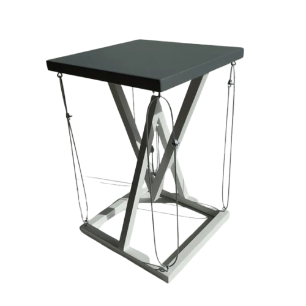
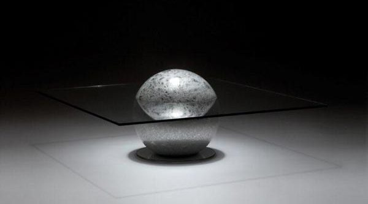
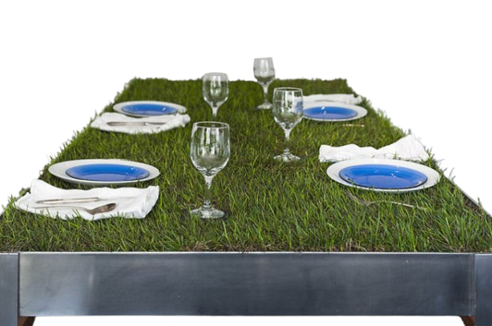
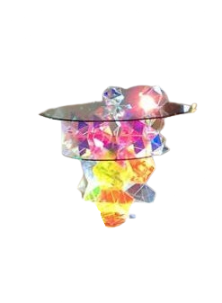
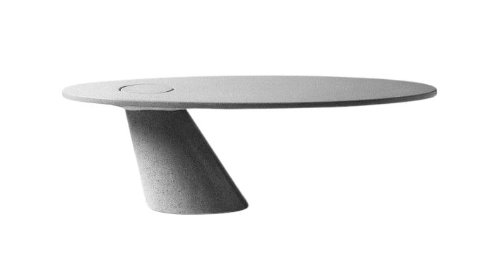

Des verres pas comme les autres
Couverts
QUIZ

Newton serait fier, les forces se compensent parfaitement !
Finalement, Fontenelle n'avait-il pas raison ? Les habitants de la Lunes n'existeraient-ils pas ?


Légumes produits sur place -> moins de CO2 dans l'air. Logique non ?
...ÇA SHINE !


Advienne que pourra...